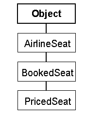
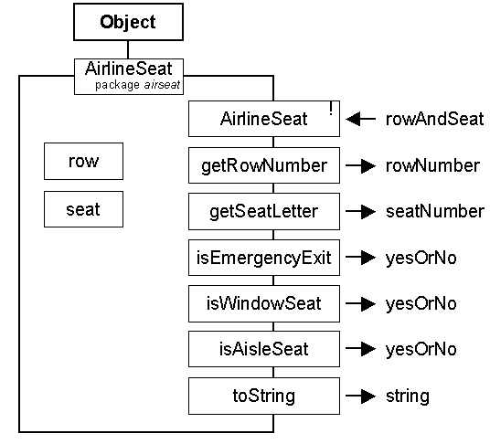
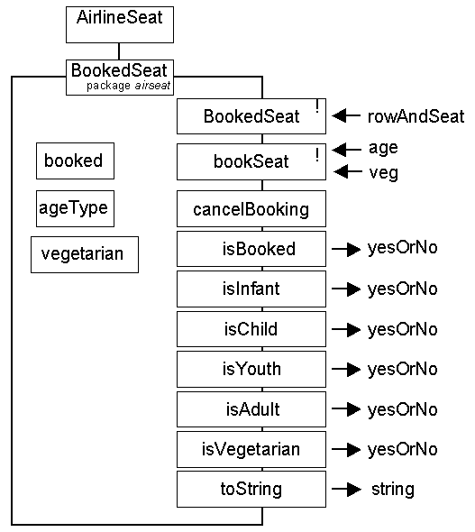

Final version - minor changes only - finalised 19th November!
The source code submission form is now available
Waypoint 3 is a complete design, build, demonstrate and document exercise.
The specification is to implement and demonstrate a class hierarchy which is concerned with the modeling of a booking of an airline seat. The class hierarchy of the airseat package, is as follows.

- The AirlineSeat class contains attributes identifying the seat, from these attributes it can be determined if it is in an exit row, if it is a window seat or if it is an aisle seat.
- The BookedSeat class contains attributes determining if the seat is booked and, if so, if the traveller is an INFANT, CHILD, YOUTH or ADULT and also if they are a vegetarian.
- The PricedSeat class contains an attribute indicating the city that the passenger is travelling to or from and so can determine the price of the booking.
The class diagrams are as follows.


The class diagram for the PricedSeat class will not be given.
The AirlineSeat class contains a single error.
The AirlineSeatDemo class is minimal but should not be changed.
The BookedSeat and PricedSeat classes are incomplete and need to be completed.
The PricedSeatDemo class is minimal and needs to be completed.
All demonstration programs can be executed in their current state.
The deadline for submission of
the report, via the school office (J200) with a yellow front
cover, is
4:30 p.m. on Thursday
24th January 2002
You report MUST be bound, contain a contents page and page numbers with listings and program output printed so as to be fully readable, and should contain all of the following:
| A completed listing of the AirlineSeat class. | 5 Marks |
| JSP schematics for the BookedSeat bookSeat() and toString() methods. | 15 Marks |
| A class diagram for the PricedSeat class. | 10 Marks |
| A list of all
methods, including inherited methods (apart from those
inherited from Object), that a PricedSeat instance supplies. |
10 Marks |
| A list illustrating the state of five PricedSeat instances indicating the predicted outcome of the toString() method and explaining why these five instances are, or are not, sufficient to give a convincing demonstration of the implementation of the three classes. | 20 Marks |
| The listing of the PricedSeatDemo program which demonstrates all five instanced from the previous section. | 15 Marks |
| An annotated script output of the PricedSeatDemo program. | 10 Marks |
| An evaluation (max 2
pages) describing how many hours you spent on the
project, what problems you encountered, how you overcame those problems and what degree of quality you think your submission has. |
15 Marks |
You are reminded that the work submitted must be your own unaided effort.
You will be required to make your source code files available for inspection, including automated anti-plagiarism checking, the form to do this on is located here. This waypoint is worth 40% of your overall SSD coursework mark, the other 60% is awarded from your waypoint 1 and 2 assessments